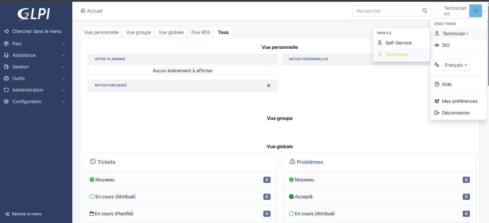

GLPI (Gestionnaire Libre de Parc Informatique) est un logiciel open source de gestion de parc informatique et de helpdesk. Il permet de suivre les incidents, les demandes de service, les actifs matériels et logiciels, ainsi que la gestion des utilisateurs. Utilisé dans le cadre du BTS SIO, GLPI illustre la compétence 1.2 — Réponse aux incidents et demandes d'assistance.